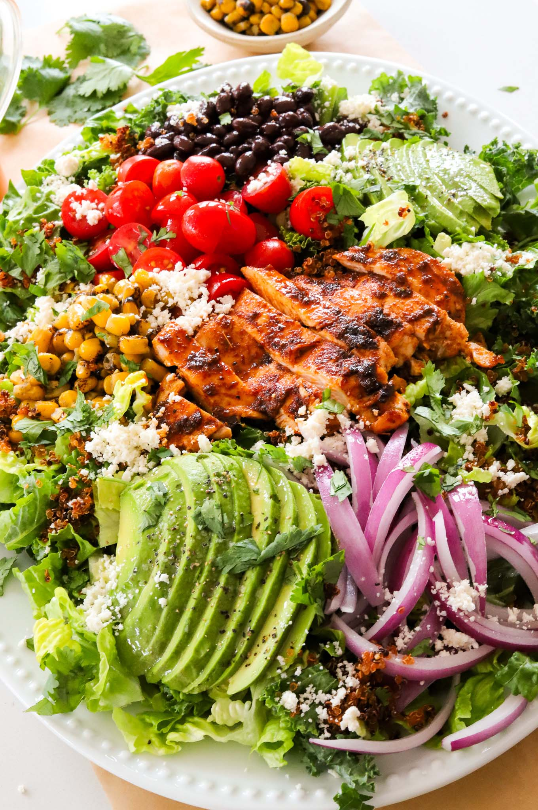

Avocado Quinoa Salad – Mendocino Farms Copycat

Prep Time: 20 minutes
Cook Time: 25 minute
Total Time: 45 minutes
Yields: 3 to 4
This Avocado Quinoa Salad is a spot-on copycat
of my all-time favorite from Mendocino Farms,
where I actually used to work. It's loaded with
crispy quinoa, fresh veggies, and a zesty chipotle
vinaigrette that's just irresistible.
I loved it so much, I had to recreate
it at home – and now you can too!
Avocado Quinoa Salad – Mendocino Farms Copycat
This Avocado Quinoa Salad is a spot-on copycat
of my all-time favorite from Mendocino Farms,
where I actually used to work. It's loaded with
crispy quinoa, fresh veggies, and a zesty chipotle
vinaigrette that's just irresistible.
I loved it so much, I had to recreate
it at home – and now you can too!
Print Recipe
Pin Recipe
Prep Time: 20 minutes
Cook Time: 25 minute
Total Time: 45 minutes
Yields: 3 to 4
Ingredients
CHIPOTLE VINAIGRETTE
- 1/4 cup honey
- 1/4 cup distilled white vinegar
- 1 tablespoon Dijon mustard
- 1 teaspoon paprika
- 1/4 cup adobo chipotle paste
- 1 teaspoon chili powder
- 1/2 cup neutral oil
- 1/4 cup water
CRISPY QUINOA
- 8 ounces cooked quinoa
- 2 to 3 tablespoons avocado oil
VEGGIES
- 2 cups romaine lettuce, chopped
- 2 cups curly kale, massaged
- 1 small Haas avocado, thinly sliced
- 1/2 cup cherry tomatoes, chopped in half
- 1/3 cup black beans
- 1/4 cup thinly sliced red onions
- 1/3 cup roasted sweet corn
- 1 tablespoon finely chopped cilantro
- 2 to 3 tablespoons cotija, crumbled
Instructions
DRESSING
-
In a blender or food processor,
combine honey, distilled white vinegar,
Dijon mustard, a pinch of salt, paprika,
adobo chipotle paste, chili powder, neutral oil,
and water.
- Blend until the dressing is well emulsified.
- Set the dressing aside.
CRISPY QUINOA CRUNCHIES
- Preheat your oven to 400°F (205°C).
-
Spread cooked quinoa on a baking sheet
lined with parchment paper.
-
Drizzle avocado oil over the quinoa
and toss to coat evenly.
-
Bake in the oven for 20-25 minutes, stirring halfway through,
until the quinoa becomes golden and crispy. Keep an eye
on it to prevent burning.
- Once crispy, remove from the oven and let it cool.
ASSEMBLY
-
In a large salad bowl, combine chopped romaine
lettuce, chopped kale, diced avocados, diced
tomatoes, drained and rinsed black beans, thinly
sliced red onion, roasted corn, and chopped fresh
cilantro.
-
Toss everything together until well mixed.
-
Once the quinoa has cooled, sprinkle it over the
salad for a delightful crunch.
-
Drizzle the chipotle vinaigrette over the
salad and toss to coat everything evenly.
-
Finish the salad by sprinkling
crumbled cotija cheese on top.
-
Serve immediately and enjoy!